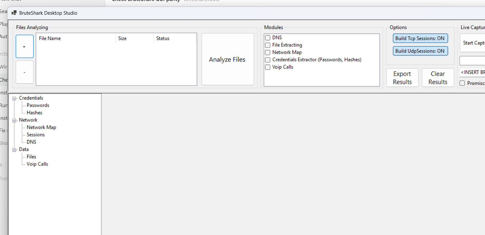
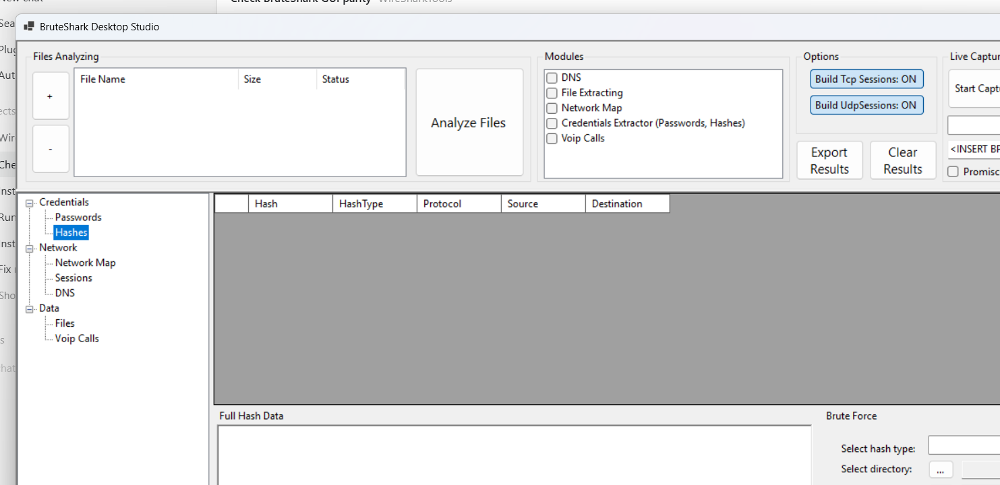

Professional Help Guide
BruteShark Studio is a desktop-focused network forensic analysis toolkit for reviewing packet captures, extracting credentials and hashes, reconstructing TCP and UDP sessions, exporting investigation artifacts, and running Hashcat directly from the desktop or CLI.
Interactive Desktop
Load captures, choose analysis modules, inspect results, export evidence, and run Hashcat from the hashes view.
Automation-Friendly CLI
Run the same analysis pipeline from the command line for repeatable batch work and scripting.
Installer with Hashcat
The Windows installer packages Hashcat and appends the installed Hashcat folder to machine PATH during elevated setup.
GitHub download after push: github.com/Ayman-Elbanhawy/BruteSharkStudio/blob/main/release/BruteSharkDesktopStudioInstaller.zip?raw=1
Quick Start
- Install or build BruteShark Desktop Studio.
- Launch the desktop application.
- Add one or more `.pcap` or `.pcapng` files.
- Select the modules you need.
- Leave TCP and UDP session reconstruction enabled unless you explicitly want faster but shallower analysis.
- Click Run.
- Review the result views from the module tree.
- Use the Hashes view to export Hashcat files or run Crack with Hashcat.
Current Application Screens


Desktop Workflow
1. Load Capture Files
Use the file picker to add one or more saved captures into the pending list. The desktop app tracks file state while processing so you can identify failed or completed items quickly.
2. Choose Modules
Enable only the modules you need when working with large captures, but keep session reconstruction enabled if you want file carving, UDP session review, or richer protocol context.
3. Run Analysis
The processor and analyzer run in the background while the UI remains responsive. Result views update as parsed items are detected.
4. Review Results
Open the module nodes to inspect passwords, hashes, network maps, sessions, files, DNS responses, and VoIP calls.
5. Export Evidence
The export flow writes carved files, network map JSON, DNS mappings, VoIP data, and Hashcat-ready hash files into one output directory.
6. Check for Updates
The desktop build checks GitHub releases for Ayman-Elbanhawy/BruteSharkStudio and prompts when a newer release exists.
Desktop Views
Passwords
Displays extracted credentials from supported clear-text or recoverable protocols. The network map view also uses these parsed identities to enrich endpoint context.
Hashes
Displays extracted authentication hashes, allows review of detailed properties, exports hashes in Hashcat format, and can run Hashcat directly with a selected wordlist.
Network Map
Builds a visual network graph from observed endpoints, services, open ports, identities, and DNS-enriched relationships.
Sessions
Shows reconstructed TCP and UDP sessions. This is important for deeper analysis, file carving, and protocol review beyond single-packet inspection.
Files, DNS, and VoIP
Provides access to carved files, DNS responses, and extracted VoIP calls so you can export evidence or continue manual review outside the application.
Hashcat Integration
BruteShark Studio supports both hash export and direct cracking workflows. The desktop application can resolve Hashcat from an explicit path, from the installer-bundled Hashcat directory, or from the system PATH.
Desktop GUI Workflow
- Open the Hashes node after analysis completes.
- Select a hash type.
- Choose an output directory.
- Optionally select a specific
hashcat.exe. - Select a wordlist.
- Optionally add extra Hashcat arguments.
- Click Crack with Hashcat.
The result dialog reports exit code, mode, input file, output file, recovered hashes, and Hashcat stderr output.
CLI Workflow
BruteSharkDesktopStudioCli -m Credentials -d C:\Captures -o C:\Results --hashcat-wordlist C:\Wordlists\rockyou.txtIf Hashcat is not installed in PATH, pass a fully qualified executable path:
BruteSharkDesktopStudioCli -m Credentials -d C:\Captures -o C:\Results --hashcat-path C:\Tools\hashcat\hashcat.exe --hashcat-wordlist C:\Wordlists\rockyou.txtInstaller Integration
The Windows MSI includes a staged Hashcat release under the app install directory and appends the installed Hashcat folder to machine PATH during elevated installation. This lets the desktop and CLI resolve Hashcat without a separate manual install in the common case.
Supported Hashcat Modes
| Hash Type | Hashcat Mode |
|---|---|
| HTTP Digest | 11400 |
| CRAM-MD5 | 16400 |
| NTLMv1 | 5500 |
| NTLMv2 | 5600 |
| Kerberos AS-REQ etype 23 | 7500 |
| Kerberos AS-REP etype 23 | 18200 |
| Kerberos TGS-REP etype 23 | 13100 |
| Kerberos TGS-REP etype 17 | 19600 |
| Kerberos TGS-REP etype 18 | 19700 |
CLI Usage
The CLI provides the same core analysis pipeline for batch work, automation, and out-of-process integrations like the Wireshark plugin.
BruteSharkDesktopStudioCli --helpProcess a Directory and Export Results
BruteSharkDesktopStudioCli -m Credentials,NetworkMap,FileExtracting,DNS -d C:\Captures -o C:\ResultsLive Capture Example
BruteSharkDesktopStudioCli -l Wi-Fi -m Credentials,NetworkMap,FileExtracting,DNS -o C:\ResultsModules
Credentials Module
Extracts usernames, passwords, and authentication hashes. This is the module required for Hashcat export and direct cracking.
Network Map Module
Builds endpoint relationships and exports network topology data for direct review or use in external graph tooling.
DNS Module
Collects DNS answers and name mappings that enrich the network view and export set.
File Extracting Module
Carves supported file formats from traffic, especially when TCP and UDP session reconstruction is enabled.
VoIP Module
Extracts SIP and RTP call information and can export audio artifacts for external review.
Exporting Results
The desktop export flow writes a structured results folder containing:
- carved files
- network map and node data
- DNS mappings
- VoIP exports
- Hashcat-ready hash files grouped by hash type
Use one export directory per case to keep evidence grouped cleanly.
Installer and PATH
The MSI is built as BruteSharkDesktopStudioInstaller.msi and installs the desktop application together with the staged Hashcat payload.
For the public repository, the installer is also packaged as
BruteSharkDesktopStudioInstaller.zip so it can be downloaded from the repo as a compressed artifact.
dotnet msbuild .\BruteSharkStudio\BruteSharkDesktopInstaller\BruteSharkDesktopInstaller.wixproj /t:Build /p:Configuration=Debug /p:Platform=x86 /v:minimalCompress-Archive -LiteralPath .\BruteSharkStudio\BruteSharkDesktopInstaller\bin\Debug\BruteSharkDesktopStudioInstaller.msi -DestinationPath .\release\BruteSharkDesktopStudioInstaller.zipBuild and Release
Build the Solution
$env:DOTNET_CLI_HOME = "$PWD\.dotnet-home"
dotnet build .\BruteSharkStudio\PcapProcessor.sln -v:minimalRun Tests
dotnet test .\BruteSharkStudio\PcapProcessor.sln -v:minimalRun the Desktop Application
dotnet run --project .\BruteSharkStudio\BruteSharkDesktop\BruteSharkDesktop.csprojRun the CLI Help
dotnet run --project .\BruteSharkStudio\BruteSharkCli\BruteSharkCli.csproj -- --helpTroubleshooting
Hashcat Does Not Start
- Verify that the selected wordlist exists.
- If you override the Hashcat path, choose the actual
hashcat.exe. - If the app is installed through the MSI, run the installer elevated so the bundled Hashcat folder is added to machine PATH.
Some Files Fail to Analyze
The desktop app reports failed files after processing. For some PCAPNG compatibility issues, converting to plain PCAP can help.
tshark -F pcap -r input.pcapng -w output.pcapLarge Captures Feel Slow
Disable modules you do not need, but keep in mind that turning off session reconstruction reduces capability coverage for sessions, file carving, and some protocol analysis.